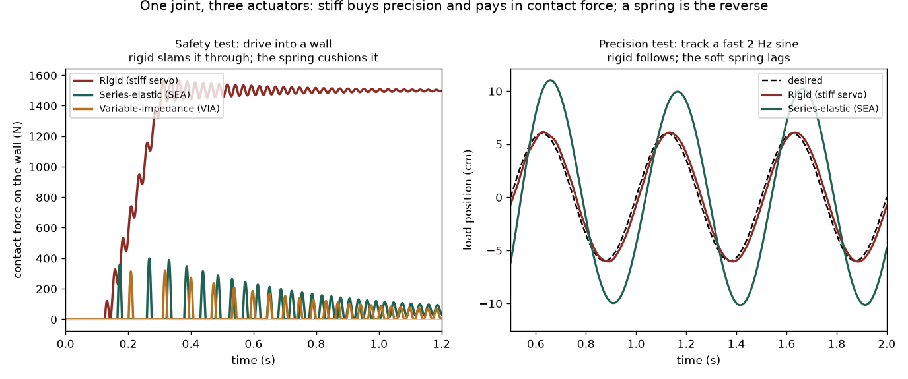

Every robot joint answers one question before it moves: how stiff is the connection from motor to load? Stiff means precise but unforgiving; soft means safe but sloppy. The identical 1-DOF joint — a motor, a transmission, a 1 kg load — is built three ways and given the same two tests: drive into a wall (safety) and track a fast sine (precision). Each is really simulated, each showing the tradeoff none of them escapes.
The rule: match the actuator's stiffness to the risk, not just the task. A joint stiff enough to place a tool to the millimetre is stiff enough to injure on accidental contact; a joint soft enough to be safe cannot track a fast trajectory. The same joint, built three ways, traces the whole tradeoff — and shows why the most interesting hardware can change its own stiffness.

| method | force into an obstacle | fast-tracking error |
|---|---|---|
| Rigid (stiff servo) stiff transmission, position-controlled | ✗ 1500 N (crushes) | ✓ 5.7 mm |
| Series-elastic (SEA) a spring between motor and load | ✓ 62 N | ✗ 40 mm (lags) |
| Variable-impedance (VIA) stiffness you change on the fly | ✓ 33 N (soft mode) | ✓ 5.7 mm (stiff mode) |
The default: the motor drives the load through a stiff transmission, so the commanded position becomes the load position almost instantly. Fast and precise — and completely rigid.
Tracks the fast 2 Hz sine to 5.7 mm RMS, the tightest of the three. But drive it into an obstacle and the stiff transmission passes the command straight through: commanded 12 cm past a wall it pushes with 1500 N sustained (peak ~1570 N) — a crushing force.
Put a real spring between the motor and the load. The spring cushions every contact, and because force = stiffness × deflection, its stretch also measures the output force — a force sensor built into the mechanism.
The same collision now pushes with only 62 N, about 24× gentler than the rigid joint, because the soft spring — not the motor — sets the contact force. That same deflection gives clean force sensing and control for free, and the spring stores and returns energy on cyclic tasks.
Make the spring's stiffness adjustable: go soft the instant contact is expected, go stiff when precision matters. One joint that can sit anywhere on the tradeoff curve instead of being welded to one point.
It gets both ends: soft on the collision, it holds contact to just 33 N; stiff on the tracking task, it matches the rigid joint at 5.7 mm. The only one of the three not stuck at a single compromise.
scripts/actuator_zoo_experiments.py.